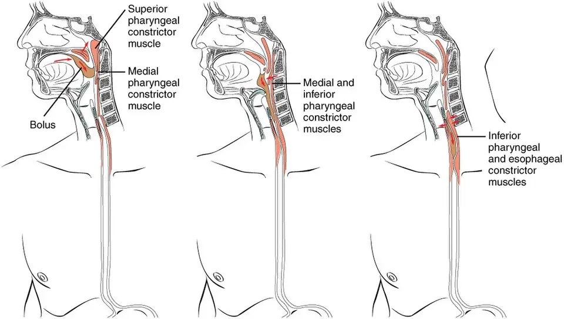

DX.1 — Dysphagie oropharyngée après accident vasculaire cérébral 🚩 E3
L'accident vasculaire cérébral (AVC) est la maladie qui désorganise le plus souvent le réseau nerveux de la déglutitionS2. Le patient reste à jeun, médicaments oraux compris, jusqu'à un dépistage formel, car la fausse route sans toux expose à la pneumonie et à la mort précoceS2.
1. Définition
Deux sociétés européennes, UEG (United European Gastroenterology) et ESNM (European Society for Neurogastroenterology and Motility), ont publié en 2025 une définition commune de la dysphagie oropharyngéeS1. Elles la définissent comme un trouble qui empêche de conduire le bol sûrement et efficacement de la bouche à l'œsophageS1. La European Stroke Organisation (ESO) et la European Society for Swallowing Disorders (ESSD) nomment dysphagie post-AVC l'atteinte de la déglutition causée par la lésion vasculaire de ce réseauS2. Le trouble menace soit la sécurité, par pénétration et aspiration laryngées, soit l'efficacité, par résidus, déglutitions fractionnées et retard du réflexeS1.
2. Épidémiologie (Suisse, puis Europe)
La Geneva Stroke Study a recensé 1 186 premiers AVC chez les résidents genevois en 2018 et 2019, avec un âge médian de 75,8 ansS4. L'incidence annuelle standardisée atteint 127,0 pour 100 000 habitants, dont 107,3 pour l'infarctus cérébralS4. Selon le critère et le moment de l'évaluation, la dysphagie touche 29 à 81 % des AVC aigus, et 11 à 50 % des patients en souffrent encore à six moisS2. Les chiffres suisses et européens et le poids pronostique expliquent pourquoi ce diagnostic ouvre la liste.
Chiffres utiles : Suisse, puis Europe
| Donnée | Valeur | Lieu et année | Source |
|---|---|---|---|
| Premiers AVC, canton de Genève, standardisés sur la population européenne | 127,0 pour 100 000 par an | Suisse, 2018–2019 | S4 |
| Létalité à 30 jours de l'infarctus cérébral, puis de l'hématome intracérébral | 10,8 %, puis 32,5 % | Suisse, 2018–2019 | S4 |
| Hématome intracérébral, puis hémorragie sous-arachnoïdienne, pour 100 000 habitants | 13,2, puis 6,0 par an | Suisse, 2018–2019 | S4 |
| Hausse des infarctus comptés avec la définition de la CIM-11 | 18,3 % | Suisse, 2018–2019 | S4 |
| Dysphagie sévère à l'admission non récupérée au jour 7, puis au jour 30, dans cinq centres suisses | 64 %, puis 30 % | Suisse, 2011–2018 | S5 |
| Prise orale altérée, puis dépendance à la sonde, après AVC supratentoriel à Saint-Gall | 36 %, puis 10 % de 119 patients | Suisse, 2016 | S6 |
| Dysphagie au cours de l'AVC aigu, selon la méthode | 29 à 81 % | Europe, 2021 | S2 |
| Dysphagie oropharyngée après AVC, méta-analyse citée par UEG/ESNM | 55,4 % | International, 2025 | S1 |
| Pneumonie associée à l'AVC | Environ 12 %, dont 78 % durant la première semaine | Europe, 2026 | S3 |
La CIM-11 compte comme infarctus les symptômes de moins de 24 heures avec lésion à l'imagerie, ce qui ajoute des AVC plus jeunes et moins sévèresS4. Les chiffres varient fortement selon l'outil, car un questionnaire méconnaît l'aspiration silencieuse que l'endoscopie révèleS1.
Poids pronostique de la dysphagie après AVC
La méta-analyse de l'ESO associe la dysphagie à une mortalité à 12 mois multipliée par un rapport de cotes de 8,82S2. Elle multiplie aussi le risque de pneumonie par 7,45 et celui de gastrostomie par 71,60S2. L'échec du dépistage dans un registre de 6 677 patients prédit une mortalité à un an accrue, avec un rapport de risques ajusté de 2,42S2. La sortie vers une institution devient près de quatre fois plus fréquente, avec un rapport de cotes de 3,90S2. La dysphagie s'associe enfin à l'humeur basse et à la dépression, ce qui pèse sur l'autonomieS2.
3. Physiopathologie
La déglutition oropharyngée comprend, en une fraction de seconde, la fermeture labiale, la propulsion linguale et la fermeture du sphincter supérieur de l'œsophage après le passage du bolS2. Cette tâche dépend d'un réseau cortical, sous-cortical et du tronc cérébral, que l'AVC peut rompre à n'importe quel étageS2. La base anatomo-fonctionnelle montre où le bol peut se tromper de voie, puis la cascade lésionnelle explique pourquoi la toux manque. La topographie de la lésion indique enfin la durée probable du trouble.
Base à connaître : le carrefour aérodigestif et ses trois temps
Le Service d'ORL (oto-rhino-laryngologie) des HUG (Hôpitaux universitaires de Genève) décrit trois phases : orale volontaire, pharyngée réflexe, puis œsophagienneS8. Au temps oral, la langue mastique puis pousse le bol vers le pharynx ; ce temps dépend du cortex moteur et du nerf hypoglosseS8. Au temps pharyngé, le réflexe se déclenche et le larynx se ferme, ce qui détourne le bol des voies respiratoiresS8.
Les trois temps de la déglutition : Ce schéma en couleurs d'OpenStax montre en coupe sagittale la tête et le cou au temps oral, au temps pharyngé, puis au temps œsophagienS14.

Le lecteur doit repérer d'abord seul, sur l'image brute, la langue, le voile, l'épiglotte et le sphincter supérieur de l'œsophage.
La copie annotée numérote les quatre repères que la lecture guidée explique.
- Au temps oral, la langue pousse le bol vers l’arrière ; une paralysie linguale ou faciale ralentit ce temps volontaire.
- Le voile du palais s’élève et ferme le rhinopharynx, ce qui empêche le reflux nasal du bol.
- Au temps pharyngé, l’épiglotte bascule et le larynx se ferme : un réflexe retardé laisse le liquide entrer dans les voies aériennes.
- Au temps œsophagien, le bol a franchi le sphincter supérieur ; les résidus stagnent au-dessus lorsque la propulsion pharyngée faiblit.
- Le schéma montre une déglutition normale : l’aspiration ne s’y voit pas, et seule l’endoscopie ou la vidéofluoroscopie la démontre.
- Le temps oral est volontaire et le temps pharyngé est réflexe ; une toux absente ne prouve donc pas un réflexe intact.
Ce que l'image décide : Le temps atteint oriente la rééducation : le liquide épaissi protège le temps pharyngé retardé, la texture adaptée aide le temps oral.

Une lésion corticale altère souvent les trois temps et laisse aspiration, résidus et réflexe retardéS1. Une lésion sous-corticale ou du tronc cérébral frappe surtout le temps pharyngé et prolonge le risque d'aspirationS1. Chez le sujet âgé et après AVC, le cortex moteur pharyngé devient moins excitable, d'où une réponse motrice plus lenteS1.
Cascade : amorce, développement, installation, maintien
- Amorce : l'ischémie ou l'hématome détruit des nœuds du réseau de déglutition, comme l'opercule rolandique, l'insula ou la couronne rayonnéeS6.
- Développement : la propulsion ralentit et le réflexe pharyngé tarde, si bien que le liquide atteint le vestibule laryngé avant sa fermetureS1.
- Installation : la sensibilité pharyngée diminue ; la toux ne se déclenche plus et la fausse route devient silencieuseS11.
- Maintien : l'immunodépression induite par l'AVC et la colonisation oropharyngée favorisent la pneumonie qui suit l'aspirationS3.
Les lésions de la couronne rayonnée supérieure retardent la récupération au-delà de 7 jours, car elles coupent les fibres corticobulbaires et thalamiquesS7. Une lésion de l'insula antérieure prédit en revanche une prise orale encore altérée après 4 semainesS7.
Topographie lésionnelle et récupération
Une équipe de Saint-Gall a cartographié voxel par voxel les infarctus hémisphériques de 119 patients évalués dans les 48 heuresS6. Une prise orale peu altérée correspond à des lésions de l'opercule rolandique, du cortex insulaire et de la couronne rayonnée supérieureS6. Le putamen, la capsule externe et le faisceau longitudinal supérieur y participent dans une moindre mesureS6.
| Siège | Effet sur la déglutition | Conséquence pratique |
|---|---|---|
| Insula antérieure | Dépendance à la sonde, récupération au-delà de 4 semainesS7 | Alimentation entérale envisagée tôtS6 |
| Couronne rayonnée supérieure | Prise orale altérée au-delà de 7 joursS7 | Sonde nasogastrique à prévoirS5 |
| Tronc cérébral ou sous-cortex | Temps pharyngé atteint, risque prolongé d'aspirationS1 | Évaluation instrumentale répétée |
| Cortex étendu | Les trois temps atteintsS1 | Rééducation globale |
La dépendance à la sonde et la prise orale altérée s'associent aussi à un NIHSS (National Institutes of Health Stroke Scale) plus élevé. Elles vont de pair avec un volume d'infarctus plus grandS6. Les AVC droits et gauches ne diffèrent pas cliniquement dans cette cohorte, ce qui interdit de rassurer selon le côtéS6.
Le tableau suivant relie chaque perturbation à l'examen qui la montre et au geste qui la corrige ; il structure tout le reste du cours.
| Perturbation | Exploration qui la montre | Thérapeutique et mécanisme |
|---|---|---|
| Réflexe pharyngé retardé, liquide aspiré | Test de déglutition, puis FEES (vidéo-endoscopie de la déglutition, fiberoptic endoscopic evaluation of swallowing) ou vidéofluoroscopieS2 | Liquides épaissis : le bol ralenti laisse au larynx le temps de se fermerS2 |
| Sensibilité pharyngée effondrée, aspiration silencieuse | FEES, qui teste directement la sensibilité et la touxS2 | Rééducation adaptée au mécanisme ; stimulation électrique pharyngée en essai cliniqueS2 |
| Prise orale insuffisante | Bilan hydrique et apports nutritionnels quotidiensS2 | Sonde nasogastrique précoce, gastrostomie si l'échec persisteS5 |
| Colonisation buccale | Inspection de la cavité buccaleS11 | Soins bucco-dentaires, qui réduisent le recours à la sondeS2 |
| Pneumonie d'aspiration constituée | Critères CDC (Centers for Disease Control and Prevention, États-Unis) adaptés, radiographie, protéine C réactiveS3 | Amoxicilline et acide clavulanique contre les germes oropharyngés aspirésS3 |
4. Démarche diagnostique
Devant une gêne à avaler, le médecin écarte d'abord l'obstruction aiguë des voies aériennes et l'impaction alimentaire, qui portent les rangs E1 et E2 de la Phase A. Une dysphagie brutale avec déficit focal impose ensuite l'imagerie cérébrale en urgence, car un AVC du tronc peut la causer seulS15. Les diagnostics discriminants se séparent par la chronologie, le déficit associé et l'examen instrumental.
Diagnostics discriminants : ce qui tranche
| Diagnostic | Élément qui tranche | Piège | Conduite si positif |
|---|---|---|---|
| Obstruction aiguë par corps étranger 🚩 E1 | Asphyxie brutale pendant le repas, sans déficit focal | La confondre avec un malaise | Manœuvres de désobstruction immédiates |
| Impaction alimentaire œsophagienne 🚩 E2 | Blocage rétrosternal subit, hypersalivation | Attribuer la salive à l'AVC | Endoscopie urgente |
| Dysphagie post-AVC 🚩 E3 | Déficit focal récent, fausse route aux liquidesS2 | Conclure sur l'absence de toux | Jeûne, dépistage, FEESS2 |
| Dysphagie parkinsonienne | Évolution lente, rigidité, bradykinésieS1 | Attribuer la toux à l'âge | FEES avec test à la lévodopaS15 |
| Myasthénie | Fatigabilité au fil du repas, ptosis fluctuant | Imputer la fatigue à l'AVC | Recherche d'anticorps |
| Cancer ou sténose de l'œsophage | Blocage rétrosternal progressif, solides d'abord | Ne pas investiguer plus de 3 semaines de gêneS8 | Endoscopie digestive haute |
Exemple chiffré : un homme de 78 ans en fibrillation atriale, aphasique sévère avec un NIHSS de 12, réussit le test d'eau, ce que l'ESO juge insuffisantS2. Son score A2DS2 (âge, fibrillation auriculaire, dysphagie, sexe, sévérité de l'AVC) atteint 6 pointsS17. Ce total compte âge 1, fibrillation 1, sexe 1 et sévérité 3, puis 8 si la dysphagie se confirmeS17. L'aphasie sévère impose malgré tout l'évaluation, puis la FEES montre souvent une aspiration que le test d'eau ignoraitS2.
Le débutant manque souvent la dysphagie post-AVC parce qu'il attend une toux ; or la fausse route silencieuse ne la déclenche pasS9. Une pneumonie inexpliquée chez un patient qui a eu un AVC doit donc faire rechercher un trouble de la déglutitionS11.
5. Anamnèse ciblée et drapeaux rouges
L'anamnèse aborde par questions ciblées la nature, la manifestation, le développement et la durée du troubleS11. Chaque plainte se caractérise dans sa fenêtre. Le médecin recherche d'abord la toux pendant le repas, la voix mouillée et le bavage avec résidus. Il recherche ensuite la lenteur et la peur des repas, les comprimés difficiles à avaler, puis les antécédents et traitements qui aggravent le risque. Les drapeaux rouges imposent chacun une action immédiate.
Toux et étouffement pendant ou après la déglutition
Siège et horaire : la toux survient pendant la déglutition ou peu après, car la fausse route peut précéder, accompagner ou suivre le réflexeS9. Déclencheur : les liquides fluides la déclenchent d'abord, puisqu'ils atteignent le larynx avant sa fermetureS2. Facteur calmant : l'épaississement des liquides réduit l'aspiration et la touxS2.
Typique ou non : ce symptôme est typique lorsqu'il existe, mais son absence n'exclut rien, car l'aspiration silencieuse ne provoque aucune touxS11.
Voix mouillée et raclements de gorge
Le changement de voix après une gorgée accompagne souvent la dysphagie oropharyngée selon UEG/ESNMS1. Il traduit la stagnation du bol dans le vestibule laryngé ou sur les cordes vocales, que le patient tente d'évacuer par des raclementsS11. Ce signe est typique, mais l'aphasie ou la dysarthrie le rendent difficile à jugerS2.
Bavage et résidus buccaux
Le défaut de fermeture labiale et les résidus oraux figurent parmi les signes d'inefficacité de la déglutitionS1. Ils siègent du côté de la paralysie faciale, car la joue et la lèvre paralysées retiennent mal le bolS2. Le symptôme est typique de l'atteinte du temps oral, mais il ne dit rien de la sécurité pharyngéeS1.
Repas prolongés, fatigue, peur de manger, amaigrissement
UEG/ESNM rangent la durée prolongée des repas, la fatigue, la peur de manger et la perte de plaisir parmi les symptômes d'accompagnementS1. La crainte de l'étouffement fait éviter certains aliments, ce qui entraîne une perte de poidsS9. Ces plaintes sont non spécifiques ; elles signalent cependant l'inefficacité et justifient le suivi des apportsS2.
Comprimés difficiles à avaler
Avaler un comprimé reste difficile pour beaucoup de patients dysphagiques, ce qui conduit à des aspirations et à l'abandon du traitementS2. La forme écrasée, coupée ou ouverte fait varier la dose, la stabilité et la pharmacocinétiqueS2. Le médecin demande donc comment le patient prend ses médicaments, puis fait évaluer la prise des comprimésS2.
Antécédents et traitements qui aggravent le risque
Les HUG citent comme causes de dysphagie l'âge avancé, les maladies neurologiques, l'intubation, la chirurgie, la radiothérapie et certains médicamentsS9. Le médecin les recherche, car une dysphagie antérieure à l'AVC change le pronostic et la conduiteS9.
UEG/ESNM estiment la dysphagie à 48,1 % chez les personnes âgées et jusqu'à 72,4 % au cours des démencesS1. Un AVC sur un terrain dément cumule donc deux mécanismes, ce qui rend l'évaluation instrumentale plus utile encoreS1.
Une pneumonie déjà présente avant l'AVC, avec fièvre et image radiologique à l'admission, se traite comme une pneumonie communautaire et non comme une aspirationS3.
Drapeaux rouges : signification et action
| Drapeau rouge | Signification | Action immédiate |
|---|---|---|
| Dysphagie brutale avec déficit neurologique | AVC aigu, possiblement du troncS15 | Filière AVC et imagerie cérébrale sans délai |
| Patient non dépisté qui reçoit à boire ou des comprimés | Aspiration probableS2 | Arrêt de toute prise orale jusqu'au dépistageS2 |
| Fièvre, toux, dyspnée dans la première semaine | Pneumonie associée à l'AVCS3 | Critères diagnostiques, puis antibiotique sans attendreS3 |
| Hypotension ou marbrures avec infection | Choc septiqueS3 | Antibiotique idéalement dans l'heureS3 |
| Vigilance abaissée | Protection des voies aériennes défaillanteS3 | Position latérale, aucune alimentation oraleS3 |
| Perte de poids, apports insuffisants | Dénutrition et déshydratationS2 | Bilan nutritionnel, sonde nasogastrique précoceS2 |
6. Examen physique ciblé, région par région
L'examen clinique de la déglutition porte sur le visage, le cou, les lèvres, la langue, la mâchoire, le palais, les dents et le larynxS11. Il juge aussi la voix, la respiration, l'articulation et la touxS11. Le médecin suit l'ordre du chevet : vigilance et posture, puis visage et lèvres et cavité buccale et langue. Il poursuit par parole et voix, nerfs crâniens caudaux et toux, essai de déglutition, puis poumons.
Région 1 — Vigilance et posture
Signe : une vigilance abaissée contre-indique l'endoscopie de déglutition et tout essai oral, car le patient ne protège plus ses voies aériennesS1. Geste : le médecin vérifie que le patient tient assis, dos droit à 90°, tête légèrement fléchieS9. Piège : manger couché ou à demi assis augmente les fausses routes ; l'essai se fait donc toujours assisS9.
Région 2 — Visage et lèvres
Signe : une paralysie faciale sévère prédit la dysphagie post-AVC et impose à elle seule une évaluation spécialiséeS2. Geste : le médecin recherche une asymétrie de la commissure au repos, puis fait gonfler les joues et serrer les lèvres. Aspect : la salive ou le liquide fuit du côté paralysé, ce qui signe un défaut de fermeture labialeS1.
Région 3 — Cavité buccale, dents et langue
Signe : des résidus alimentaires, une plaque dentaire ou une prothèse mal tenue signalent une colonisation qui nourrit la pneumonieS2. Geste : le médecin inspecte la bouche à la lampe, prothèse retirée, puis fait tirer et latéraliser la langue. Valeur : une langue faible ou déviée annonce un temps oral lent, car elle propulse mal le bolS8.
Région 4 — Parole et voix
Signe : une dysarthrie sévère ou une aphasie sévère prédisent la dysphagie et justifient l'évaluation même après un dépistage réussiS2. Geste : le médecin fait parler le patient, puis écoute la voix avant et après une gorgée d'eau. Aspect : une voix devenue mouillée après la gorgée oriente vers une stase laryngéeS1.
Région 5 — Nerfs crâniens caudaux et toux
Signe : l'examen clinique de la déglutition inclut les nerfs crâniens caudaux, qui commandent le voile, le pharynx et le larynxS2. Geste : le médecin observe le voile, puis demande une toux volontaire et un raclement de gorgeS11. Piège : l'examen clinique seul reste peu fiable ; le test du réflexe de toux et la mesure du débit de pointe complètent l'estimation du risqueS2.
Région 6 — Essai de déglutition au chevet
Geste : le test porte d'abord sur la salive, puis sur des consistances liquides, pâteuses et solides selon l'observationS11. Aspect pathologique : une toux, un raclement ou une voix mouillée après la gorgée arrêtent le testS2. Piège : un essai réussi n'écarte pas l'aspiration silencieuse, que seule l'imagerie fonctionnelle peut exclureS11.
Région 7 — Poumons
Signe : la fièvre, des sécrétions purulentes et des crépitants orientent vers une pneumonie associée à l'AVCS3. Geste : le médecin ausculte les bases et mesure la saturation, qu'il surveille régulièrement en unité cérébrovasculaireS3. Valeur : l'oxygène se donne seulement pour corriger une hypoxie, avec une cible d'au moins 94 %S3.
7. Approche syndromique
Les signes se regroupent en quatre syndromes qui guident l'examen et le traitement : défaut de sécurité, défaut d'efficacité, syndrome infectieux d'aspiration et syndrome de dénutritionS1. La fenêtre des signes précise pour chacun sa définition, son geste et son mécanisme.
| Syndrome | Signes fonctionnels | Signes physiques |
|---|---|---|
| 7.1 Défaut de sécurité | Toux, étouffement, voix mouilléeS1 | Pénétration ou aspiration à la FEESS1 |
| 7.2 Défaut d'efficacité | Repas prolongés, fatigue, bavageS1 | Résidus oraux et pharyngés, déglutitions fractionnéesS1 |
| 7.3 Infection d'aspiration | Dyspnée, toux productiveS3 | Fièvre, crépitants, désaturationS3 |
| 7.4 Dénutrition et déshydratation | Peur de manger, perte d'appétitS1 | Perte de poids, bilan hydrique négatifS2 |
Définition, geste et mécanisme des signes
- Pénétration laryngée : Le bol entre dans le vestibule laryngé sans franchir les cordes vocales ; l'endoscopie la montre après une gorgée coloréeS1.
- Aspiration : Le bol passe sous les cordes vocales vers la trachée ; elle signe un défaut de sécuritéS1.
- Aspiration silencieuse : Le bol aspiré ne déclenche ni toux ni raclement, car la sensibilité est diminuéeS11.
- Résidu pharyngé : Une partie du bol reste dans les vallécules ou les sinus piriformes après la déglutition et peut être aspirée ensuiteS1.
- Réflexe retardé : La réponse pharyngée tarde après l'arrivée du bol ; la vidéofluoroscopie mesure ce tempsS2.
- Déglutition fractionnée : Le patient avale une même bouchée en plusieurs fois, ce qui révèle une propulsion insuffisanteS1.
8. Diagnostic positif et critères
Aucun critère chiffré unique ne définit la dysphagie post-AVC ; le diagnostic associe un AVC récent, un dépistage échoué ou un facteur prédictif, puis une évaluation clinique ou instrumentale positiveS2. Les critères ESO/ESSD 2021 et les scores pronostiques disent ce qui suffit et ce qui ne suffit pasS2.
Critères ESO/ESSD 2021 : qui évaluer, sur quelle base
| Situation | Ce qu'elle impose |
|---|---|
| Tout AVC aigu | Dépistage formel au plus vite après l'admissionS2 |
| Dépistage échoué | Évaluation de la déglutition au plus viteS2 |
| Paralysie faciale, dysarthrie ou aphasie sévères | Évaluation même si le dépistage passeS2 |
| Score NIHSS d'au moins 10 points | Évaluation même si le dépistage passeS2 |
| Troubles cognitifs | Évaluation, car ils aggravent le risqueS2 |
Un dépistage réussi ne suffit donc pas chez un patient porteur d'un de ces prédicteurs, car l'aspiration silencieuse échappe au test d'eauS2. Seules la FEES et la vidéofluoroscopie démontrent l'aspiration, y compris silencieuseS1.
Scores : A2DS2 et Predictive Swallowing Score
Le score A2DS2 compte 10 points ; la dysphagie y vaut 2 points, l'âge d'au moins 75 ans, la fibrillation atriale et le sexe masculin 1 point chacunS17. La sévérité de l'AVC y ajoute 3 points pour un NIHSS de 5 à 15, puis 5 points au-delà de 15S17. Ce score prédit la pneumonie, mais il ne guide encore aucune prévention efficace en routineS3.
Le Predictive Swallowing Score, construit dans cinq centres suisses, combine l'âge, la sévérité, le siège lésionnel, le risque initial d'aspiration et la prise orale initialeS5. Il estime de 5 à 96 % le risque de prise orale encore altérée au jour 7, avec une statistique C de 0,84S5. Une validation américaine rétrospective l'a trouvé mal calibré ; il éclaire donc la décision sans la remplacerS16.
9. Examens complémentaires
9.a Gold standard : UEG/ESNM retiennent la FEES et la vidéofluoroscopie comme méthodes de référence, car elles seules montrent l'aspiration silencieuseS1.
9.b Première intention : le dépistage formel au chevet précède toute prise orale, puis l'évaluation clinique spécialisée suit l'échecS2.
9.c Alternatives : une vigilance abaissée ou une fréquence respiratoire supérieure à 35/min contre-indiquent la FEES ; la vidéofluoroscopie la remplace lorsque l'on suspecte un trouble oral ou œsophagienS1.
9.d Deuxième intention : la recherche d'une pneumonie et le bilan nutritionnel mesurent les conséquences.
Dépistage formel au chevet
Indication : Tout AVC aigu reçoit un dépistage formel dès l'admission, ce qui prévient la pneumonie et diminue la mortalité précoceS2. Prescription : le test d'eau ou un test à plusieurs consistances convient, car aucune étude ne départage les deux approchesS2.
Le Gugging Swallowing Screen (GUSS) teste successivement des bols semi-solides, liquides puis solides de volume croissant et s'arrête au premier signe d'aspirationS2. Il classe la dysphagie en sévère, modérée, légère ou absente, et associe à chaque classe un régime adaptéS2. Le test volume-viscosité utilise des bols de 5, 10 et 20 mL en trois viscosités, puis juge la sécurité et l'efficacitéS2.
| Résultat | Signification | Conduite |
|---|---|---|
| Échec | Dysphagie probableS2 | Jeûne maintenu, évaluation au plus viteS2 |
| Réussite sans prédicteur | Déglutition jugée sûreS2 | Reprise orale, puis surveillance |
| Réussite avec prédicteur | Aspiration silencieuse non exclueS2 | Évaluation spécialiséeS2 |
Piège : un protocole de dépistage a réduit de plus de moitié la pneumonie, de 6,5 à 2,8 %, ce qui interdit de le différerS2.
Évaluation clinique spécialisée de la déglutition
Principe : l'évaluation clinique porte sur la cavité buccale et les nerfs crâniens caudaux, puis teste divers alimentsS2. En cas d'anomalie, le thérapeute introduit des manœuvres qui améliorent la sécurité et l'efficacitéS2.
Indication : dépistage échoué ou prédicteur clinique, au plus vite, et prise des comprimés évaluée en routineS2.
Délai : dans une cohorte de 63 650 AVC, l'évaluation a été faite chez 38,6 % des patients seulement, après une médiane de 22,9 heuresS2. Un retard au-delà de 24 heures ajoute 4 % de risque absolu de pneumonieS2. Une évaluation dans les 48 heures s'associe à moins d'infections respiratoiresS2.
Piège : la validité de l'examen clinique seul reste discutée, car il ignore l'aspiration silencieuseS2. Le test du réflexe de toux, le test de provocation de la déglutition et le débit de pointe affinent le risque de pneumonieS2.
Endoscopie de déglutition (FEES)
Principe : un nasofibroscope souple est introduit par la narine jusqu'au pharynx, puis il montre des déglutitions de consistances différentesS2. Indication : Échec du dépistage ou prédicteur clinique de dysphagie, puis choix du régime et contrôle de l'évolutionS1.
Avantages : elle se fait au lit, se répète vite, teste directement la sensibilité pharyngée et juge la gestion des sécrétions et l'efficacité de la touxS2. Elle détecte l'aspiration et les résidus un peu mieux que la vidéofluoroscopieS1.
| Résultat | Signification | Conduite |
|---|---|---|
| Salive stagnante dans le vestibule | Défaut de sécurité au reposS1 | Aucune prise orale, sonde nasogastrique |
| Aspiration des liquides fluides seulement | Réflexe retardéS2 | Liquides épaissis selon l'évaluationS2 |
| Résidus dans les vallécules ou les sinus piriformes | Défaut d'efficacitéS1 | Textures adaptées, rééducation cibléeS2 |
| Aspiration sans toux | Aspiration silencieuseS1 | Jeûne oral, alimentation entérale |
Contre-indications : l'obstruction nasale bilatérale complète, une fréquence respiratoire supérieure à 35/min, une vigilance altérée ou le refus de manger l'interdisentS1. Après l'ouverture d'un service de FEES, la pneumonie est passée de 12,3 à 6,4 % des AVCS2. Le catalogue de cas de Radiopaedia montre des séquences commentées, que l'on consulte par recherche « aspiration swallow ».
Vidéofluoroscopie de déglutition
Principe : la vidéofluoroscopie montre sous rayons X les temps oral, pharyngé et œsophagien d'un bol barytéS2. Elle montre si le patient aspire et pourquoi, puis teste textures, postures et manœuvresS2. Indication : Suspicion de trouble oral ou œsophagien associé, où elle prime sur la FEESS1.
Interprétation : elle mesure le temps de transit oral, le temps de transit pharyngé et le délai de fermeture du vestibule laryngéS2. Le profil MBSImP résume 17 paramètres en un score globalS2. Piège : elle expose aux rayons et exige un patient transportable et assis, contrairement à la FEES au lit.
Recherche d'une pneumonie associée à l'AVC
Indication : Fièvre, toux, sécrétions ou désaturation durant les 7 premiers jours font appliquer des critères diagnostiques standardisésS3. Le groupe PISCES (Pneumonia in Stroke Consensus group) adapte les critères des Centers for Disease Control and Prevention (CDC). Dans cette adaptation, la pneumonie est probable sans image typique et confirmée avec elleS3.
| Examen | Interprétation | Piège |
|---|---|---|
| Radiographie du thorax | Un infiltrat typique confirme la pneumonieS3 | Une radiographie précoce peut rester normale |
| Tomodensitométrie thoracique | Elle apporte une valeur diagnostique supplémentaireS3 | Elle ne se fait pas en routine |
| Protéine C réactive | Un seuil de 30 à 40 mg/L améliore l'algorithmeS3 | L'AVC lui-même l'élève |
| Cultures | Elles isolent surtout des bacilles Gram négatifsS3 | Elles restent souvent négatives |
Les entérobactéries représentent 21,8 % des germes isolés, Staphylococcus aureus 10,1 % et Streptococcus pneumoniae seulement 3,5 %S3. Une pneumonite chimique après aspiration massive témoin ne reçoit pas d'antibiotique d'emblée ; celui-ci commence si l'infection se confirme après 24 à 48 heuresS3.
Bilan nutritionnel et hydrique
Indication : Tout patient sous texture modifiée ou liquides épaissis reçoit un suivi du bilan hydrique et des apports, car l'épaississement fait moins boireS2. Interprétation : la dénutrition après AVC varie de 8,2 à 49 % selon les séries et s'associe fortement à la dysphagieS1. Conduite : des apports oraux insuffisants font poser précocement une sonde nasogastriqueS2.
10. Arbre décisionnel
L'arbre part de l'admission pour AVC et place le risque vital en tête ; chaque nœud renvoie à un signe, un examen ou une action déjà décrits.
- Si la vigilance est abaissée, alors le patient reste à jeun en position latérale, sans essai oralS3.
- Sinon, le patient reste à jeun, comprimés compris, jusqu'au dépistage formel fait au plus viteS2.
- Si le dépistage échoue, alors l'évaluation clinique puis la FEES fixent les consistances permisesS2.
- Si le dépistage réussit mais qu'un prédicteur existe, alors l'évaluation spécialisée reste obligatoireS2.
- Si le dépistage réussit sans prédicteur, alors l'alimentation reprend et l'équipe surveille la toux et la fièvre.
- Si les apports oraux restent insuffisants, alors une sonde nasogastrique nourrit le patient précocementS2.
- Si la dysphagie persiste au-delà de 30 jours, alors l'équipe discute une gastrostomieS5.
- Si une pneumonie apparaît, alors l'antibiotique commence sans délai et la déglutition est réévaluéeS3.
11. Prise en charge selon les recommandations suisses
11.A But : le traitement vise à prévenir la pneumonie et la mort précoce, puis à rendre une alimentation orale sûre et suffisanteS2.
11.B Moyens : la conduite chronologique d'urgence organise les premières heures, puis le traitement par étapes associe textures, rééducation, nutrition et soins buccaux. Les fiches de l'amoxicilline et acide clavulanique et du métoclopramide recopient leurs informations professionnelles, puis le tableau des médicaments les compare. Le choix de l'antibiotique selon le délai, la voie d'alimentation et les traitements en essai complètent la décision.
Urgence — conduite chronologique
- Minute 0, admission : L'équipe ne donne ni aliment, ni boisson, ni comprimé avant le dépistageS2.
- Premières heures : Le dépistage formel se fait au plus vite ; un patient peu vigilant est tourné en décubitus latéral toutes les 2 heuresS3.
- Avant 24 heures : L'évaluation spécialisée suit l'échec ; un retard d'évaluation logopédique ajoute 3 % de risque absolu de pneumonie sur les 24 premières heuresS2.
- Médicaments vitaux : Ils reçoivent la formulation la mieux adaptée, choisie après évaluation de la prise des comprimésS2.
- Pneumonie suspectée : L'antibiotique est donné dans les 3 heures en cas de sepsis, et dans l'heure en cas de chocS3.
- Jours 1 à 7 : Une prise orale insuffisante fait poser une sonde nasogastrique précoce plutôt qu'une gastrostomieS2.
- Jour 30 : Une dysphagie persistante fait discuter la gastrostomie percutanéeS5.
Prévoir : la pneumonie survient dans 78 % des cas durant la première semaine ; l'équipe surveille donc température et saturation dès l'admissionS3. Piège : un antibiotique préventif n'apporte rien : la mortalité à 90 jours atteint 18,3 % sous prophylaxie contre 17,2 % sansS3.
Traitement par étapes
- Textures et liquides épaissis : L'ESO les suggère pour réduire la pneumonie, mais seulement sur la base d'une évaluation de la déglutitionS2.
- Posture : Le patient mange assis à 90°, menton vers la poitrine, et ne bascule pas la tête en arrière pour avalerS9.
- Rééducation comportementale : Les exercices de déglutition se choisissent selon le mécanisme observé, sans se limiter à une seule manœuvreS2.
- Soins bucco-dentaires : Ils tendent à réduire la pneumonie, et les essais montrent moins de recours à la sonde avec un risque relatif de 0,43S2.
- Nutrition : Les suppléments oraux ne se donnent pas en routine, mais seulement en cas de dénutrition ou de risque de dénutritionS2.
- Neurostimulation : La stimulation électrique pharyngée accélère la décanulation des patients trachéotomisés, mais les autres techniques restent réservées aux essaisS2.
Dans l'essai FOOD (Feed Or Ordinary Diet), la sonde nasogastrique précoce a réduit la mortalité de 5,8 points sans significationS2. Cette sonde précoce s'accompagnait de plus d'hémorragies digestivesS2. La gastrostomie précoce a donné plus de décès ou de handicap et plus d'escarres que la sonde nasogastriqueS2. Les traitements pharmacologiques de la déglutition elle-même se prescrivent de préférence dans un essai cliniqueS2.
Amoxicilline et acide clavulanique — Co-Amoxi-Mepha i.v. (n° 56758)
| Rubrique | Contenu de l'AIPS (information professionnelle suisse) |
|---|---|
| Indication | Infections à germes sensibles, dont la pneumonie bactérienne, l'abcès pulmonaire et l'empyèmeS12 |
| Dose AIPS | Chez l'adulte de plus de 40 kg, 1200 mg (1000/200) 3 à 4 fois par jour en injection intraveineuse lente pour une infection modéréeS12 |
| Infection grave | 2200 mg (2000/200) 3 à 4 fois par jour en perfusion d'au moins 30 minutesS12 |
| Rein | Clairance de 10 à 30 mL/min : 1,2 g puis 600 mg toutes les 12 heures, sans perfusion de 2200 mgS12 |
| Rein sévère et dialyse | Clairance inférieure à 10 mL/min : 600 mg toutes les 24 heures ; 600 mg de plus après chaque hémodialyseS12 |
| Contre-indication | Hypersensibilité aux pénicillines, aux céphalosporines ou à l'acide clavulanique ; ictère lors d'un traitement antérieurS12 |
| Grossesse et allaitement | Grossesse seulement en cas de nécessité absolue ; ne pas allaiter pendant le traitementS12 |
La forme intraveineuse convient au patient qui ne peut rien avaler, et le relais oral se fait dès que la déglutition le permetS12. L'ESO reprend la recommandation britannique qui place l'amoxicilline et acide clavulanique en première ligne de la pneumonie d'aspiration, pendant au moins 5 jours guidés par la réponseS3.
Métoclopramide — Paspertin® (n° 32733)
| Rubrique | Contenu de l'AIPS |
|---|---|
| Indication AIPS | Nausées et vomissements chez l'adulte ; la prévention de l'aspiration sous sonde n'y figure pasS13 |
| Dose AIPS | Chez l'adulte, 10 mg jusqu'à trois fois par jour, au plus 30 mg ou 0,5 mg/kg par jourS13 |
| Durée | Au plus 5 jours, en raison du risque de dyskinésie tardive irréversibleS13 |
| Rein terminal | Dose journalière réduite de 75 % pour une clairance d'au plus 15 mL/minS13 |
| Rein | Dose réduite de 50 % pour une clairance de 15 à 60 mL/minS13 |
| Contre-indications | Maladie de Parkinson, épilepsie, hémorragie ou occlusion digestive, phéochromocytome, association à la lévodopa, antécédent de dyskinésie tardive aux neuroleptiques ou au métoclopramide, tumeurs dépendantes de la prolactine, antécédent de méthémoglobinémieS13 |
| Grossesse et allaitement | Grossesse : « l'utilisation de Paspertin durant la grossesse aura lieu uniquement en cas d'indication stricte » ; « Le métoclopramide doit être évité en fin de grossesse » ; allaitement : « l'utilisation du métoclopramide pendant l'allaitement n'est pas recommandée. Un arrêt du traitement doit être envisagé chez les mères qui allaitent. Si un traitement par Paspertin devait s'avérer indispensable, le sevrage du nouveau-né est recommandé. »S13 |
L'ESO/ESSD 2021 suggère le métoclopramide chez le patient nourri par sonde, pour accélérer la vidange gastrique et limiter la régurgitation aspiréeS2. La recommandation ESO 2026 sur la pneumonie associée à l'AVC juge toutefois les preuves insuffisantes et ne recommande pas les antiémétiques pour la prévenirS3. On ne retient donc pas le métoclopramide pour prévenir la pneumonie. Les essais ont duré de 4 à 21 jours, alors que l'AIPS limite le traitement à 5 jours ; la conduite enseignée suit l'AIPSS3.
Choix de l'antibiotique selon le délai de survenue
| Délai après l'AVC | Position du groupe PISCES | Position de l'ESO 2026 |
|---|---|---|
| Jusqu'à 72 heures | Traitement de pneumonie communautaireS3 | Traitement de pneumonie d'aspirationS3 |
| De 72 heures à 7 jours | Communautaire, plus Gram négatifs et Pseudomonas si facteurs de risqueS3 | Bêtalactamine avec inhibiteur de bêtalactamaseS3 |
| Au-delà de 7 jours | Protocole de pneumonie nosocomialeS3 | Protocole de pneumonie nosocomialeS3 |
L'ESO considère que la pneumonie de la première semaine résulte surtout d'une micro-aspiration, d'où des germes proches de ceux de la pneumonie nosocomialeS3. La couverture des anaérobies et des germes atypiques ne s'impose pas, sauf aspiration massiveS3.
L'association d'amoxicilline et de métronidazole remplace l'amoxicilline et acide clavulanique lorsque ce dernier ne peut pas être donnéS3. La désescalade suit les cultures, et le relais oral se fait dès que possibleS3.
Voie d'alimentation : sonde nasogastrique ou gastrostomie
L'échelle de prise orale fonctionnelle (FOIS) sert de repère : un score inférieur à 5 définit une prise orale sévèrement altérée dans la cohorte suisseS5. Un score d'au moins 5 définit la récupération de la prise oraleS5.
Les recommandations citées par cette cohorte posent une sonde nasogastrique lorsque l'atteinte dure au moins 7 joursS5. Elles réservent la gastrostomie percutanée à la dysphagie qui ne récupère pas en 30 joursS5.
Le Predictive Swallowing Score estime de 2 à 62 % le risque d'atteinte persistante au jour 30, ce qui aide à choisir la voieS5. Les suppléments nutritifs oraux ne se donnent pas en routine, mais ils se discutent devant une dénutritionS2.
Traitements en essai : pharmacologie et neurostimulation
Dans la méta-analyse de l'ESO, les inhibiteurs de l'enzyme de conversion et les agents dopaminergiques raccourcissent la réponse pharyngée. Il en va de même pour les agonistes TRPV1 (récepteur vanilloïde de potentiel transitoire de type 1)S2. Les études non randomisées montrent moins de pneumonies, avec un risque relatif de 0,60 et de 0,31, mais les essais randomisés ne le confirment pasS2.
Dans un essai de 163 patients, l'amantadine a réduit la pneumonie sur 3 ans, avec un risque relatif de 0,22S2. L'ESO suggère donc d'envisager les agonistes TRPV1 et les dopaminergiques lorsque le réflexe est altéré, sur une recommandation faibleS2.
La stimulation magnétique transcrânienne répétitive, la stimulation électrique transcutanée, la stimulation transcrânienne à courant continu et la stimulation pharyngée s'ajoutent à la rééducation classiqueS2. L'acupuncture peut aussi servir à la rééducation, selon une recommandation faible de l'ESOS2.
Tableau des médicaments
| Molécule ® | Dose AIPS | Voie et durée | Contre-indication majeure |
|---|---|---|---|
| Amoxicilline et acide clavulanique, Co-Amoxi-Mepha i.v. | 1200 mg 3 à 4 fois par jourS12 | Intraveineuse, au moins 5 joursS3 | Allergie aux bêtalactaminesS12 |
| Métoclopramide, Paspertin | 10 mg jusqu'à trois fois par jourS13 | Intraveineuse ou orale, 5 jours au plusS13 | Maladie de ParkinsonS13 |
Un patient allergique aux pénicillines reçoit une fluoroquinolone comme la lévofloxacine, selon la recommandation britannique reprise par l'ESOS3. Une couverture contre le Staphylococcus aureus résistant s'ajoute seulement en présence de facteurs de risqueS3.
Situations spéciales : chez le sujet âgé fragile, le métoclopramide se prescrit à dose réduite selon les fonctions rénale et hépatiqueS13. Chez la femme enceinte, l'amoxicilline et acide clavulanique se réserve à la nécessité absolueS12. Les comprimés qui ne s'avalent pas entiers ne s'écrasent qu'après accord médical, puis se mélangent à un yogourt ou une compoteS9.
Volet social et assurances : aux HUG, la rééducation logopédique se poursuit en ambulatoire par un plan personnalisé de 12 séances, prescrit avant la sortieS10. L'assurance de base (LAMal) rembourse ces séances, après déduction de la franchise et de la quote-part de 10 %S10. Les proches y apprennent à aider le patient, ce qui prolonge la prévention des fausses routes à domicileS10.
11.C Surveillance : l'équipe surveille le bilan hydrique et les apports chez tout patient sous texture modifiéeS2. Elle contrôle la saturation régulièrement et donne l'oxygène seulement sous 94 %S3. Elle arrête l'antibiotique plus tôt si le diagnostic de pneumonie se révèle fauxS3.
11.D Pronostic et sortie : dans la cohorte suisse, 30 % des dysphagies sévères restent sans récupération de la prise orale à 30 jours, et ce retard prédit un mauvais devenirS5. Les critères de sortie s'énumèrent un par un : critères de sortie.
Critères de sortie et de guérison
- La consistance permise est fixée par une évaluation de la déglutition et notée par écritS2.
- Les apports hydriques et nutritionnels couvrent les besoins, ou une sonde fonctionnelle les assureS2.
- La forme de chaque médicament a été adaptée à la capacité d'avaler les comprimésS2.
- La pneumonie éventuelle est stabilisée, sans fièvre et avec une respiration amélioréeS3.
- La rééducation logopédique ambulatoire est prescrite et les proches ont reçu les consignesS10.
La guérison se définit par le retour à l'alimentation orale antérieure, que le score suisse prédit avec une statistique C de 0,94 au jour 7S5.
12. Prévention
Primaire : la prévention de l'AVC lui-même réduit la dysphagie, car l'AVC reste sa première cause ; elle relève du cours vasculaire. Secondaire : le dépistage formel et le jeûne initial réduisent la pneumonie, ce que la baisse de 6,5 à 2,8 % démontreS2. Tertiaire : les soins bucco-dentaires, la posture assise, les textures adaptées et la mobilisation précoce limitent les rechutes infectieusesS3. La prévention de la pneumonie au lit précise ces gestes. L'antibioprophylaxie, en revanche, est contre-indiquée par une recommandation forte fondée sur des preuves de haute qualitéS2.
Prévention de la pneumonie au lit
Le comité d'experts de l'ESO conseille de tourner le patient du dos sur le côté droit puis gauche toutes les 2 heures, avec une mobilisation passive de toutes les articulationsS3. L'essai HeadPoST, mené chez 11 093 patients, ne montre aucune différence de pneumonie entre tête à plat et tête relevée d'au moins 30°S3.
Ce résultat ne s'étend pas aux AVC sévères, car le NIHSS médian de l'essai valait seulement 4S3. La mobilisation précoce, en revanche, réduit la pneumonie selon une relation dose-effet dans une vaste cohorte japonaiseS3.
Après chaque repas, le patient brosse ses dents ou sa prothèse, qu'il retire, nettoie et garde au sec la nuitS9.
13. Points clés
- Tout patient victime d'un AVC reste à jeun, comprimés compris, jusqu'à un dépistage formel de la déglutition fait au plus vite.
- L'absence de toux ne prouve rien, car l'aspiration silencieuse ne se voit qu'à la FEES ou à la vidéofluoroscopie.
- Une paralysie faciale, une dysarthrie ou une aphasie sévères, ou un NIHSS d'au moins 10, imposent l'évaluation même après un dépistage réussiS2.
- La sonde nasogastrique précoce nourrit le patient dysphagique ; la gastrostomie se discute seulement si la dysphagie persiste un mois.
- La pneumonie d'aspiration se traite sans délai par amoxicilline et acide clavulanique, mais aucun antibiotique ne se donne en prévention.
14. Pièges et questions fréquentes à l'examen fédéral suisse
Les neuf questions suivantes reprennent les confusions de conduite, de critère et de dose ; la grille des réponses donne la raison et renvoie au point.
Questions d'examen, réponses et raisons
| Question | Réponse | Raison |
|---|---|---|
| Un patient arrive avec un AVC ; peut-on lui donner son aspirine en comprimé avant tout test ? | Non | Aucun aliment ni comprimé avant le dépistage, point 11S2 |
| Le test d'eau est réussi chez un patient aphasique sévère ; la déglutition est-elle sûre ? | Non, il faut une évaluation spécialisée | L'aphasie sévère est un prédicteur, point 8S2 |
| Faut-il une antibioprophylaxie chez un AVC dysphagique ? | Non | Aucun effet sur la pneumonie ni la mortalité, point 12S3 |
| Quel examen montre l'aspiration silencieuse au lit du malade ? | La FEES | Elle se fait au lit et teste la sensibilité, point 9S2 |
| Le jour 3, un patient ne mange pas assez ; sonde nasogastrique ou gastrostomie ? | Sonde nasogastrique | La gastrostomie précoce fait moins bien, point 11S2 |
| Combien de jours peut-on prescrire le métoclopramide selon l'AIPS ? | 5 jours au plus | Risque de dyskinésie tardive, point 11S13 |
| Un AVC frontal droit rend-il la dysphagie moins probable qu'un AVC gauche ? | Non | Le côté ne distingue pas les patients dans la cohorte suisse, point 3S6 |
| Une aspiration massive témoin sans fièvre impose-t-elle un antibiotique immédiat ? | Non, surveillance 24 à 48 heures | Pneumonite chimique d'abord, point 9S3 |
| Quel antibiotique en première ligne pour une pneumonie d'aspiration post-AVC ? | Amoxicilline et acide clavulanique | Germes oropharyngés et Gram négatifs, point 11S3 |
Sources
Toutes les sources ont été lues le 12.11.2026 (Europe/Zurich).
- [S1] Mari A, Calabrese F, Lorenzon G et al. Esophageal and Oropharyngeal Dysphagia: Clinical Recommendations From the United European Gastroenterology and European Society for Neurogastroenterology and Motility. United European Gastroenterology Journal 2025;13(6). doi:10.1002/ueg2.70062 (texte intégral PMC12269739 lu le 12.11.2026). https://pmc.ncbi.nlm.nih.gov/articles/PMC12269739/
- [S2] Dziewas R, Michou E, Trapl-Grundschober M et al. European Stroke Organisation and European Society for Swallowing Disorders guideline for the diagnosis and treatment of post-stroke dysphagia. European Stroke Journal 2021;6(3):LXXXIX–CXV. doi:10.1177/23969873211039721 (texte intégral PMC8564153 lu le 12.11.2026). https://pmc.ncbi.nlm.nih.gov/articles/PMC8564153/
- [S3] Meisel A et al. European Stroke Organisation guideline on stroke-associated pneumonia. European Stroke Journal 2026;11(5). doi:10.1093/esj/aakag044 (texte intégral PMC13151663 lu le 12.11.2026). https://pmc.ncbi.nlm.nih.gov/articles/PMC13151663/
- [S4] Dirren E, Escribano Paredes JB, Klug J et al. Stroke Incidence, Case Fatality, and Mortality Using the WHO International Classification of Diseases 11: The Geneva Stroke Study. Neurology 2025;104(5):e213353. doi:10.1212/WNL.0000000000213353 (résumé PubMed lu le 12.11.2026). https://doi.org/10.1212/WNL.0000000000213353
- [S5] Galovic M, Stauber AJ, Leisi N et al. Development and Validation of a Prognostic Model of Swallowing Recovery and Enteral Tube Feeding After Ischemic Stroke. JAMA Neurology 2019;76(5):561-570. doi:10.1001/jamaneurol.2018.4858 (résumé PubMed lu le 12.11.2026 ; cohortes de Saint-Gall, Bâle, Aarau, Berne et Lugano). https://doi.org/10.1001/jamaneurol.2018.4858
- [S6] Galovic M, Leisi N, Müller M et al. Neuroanatomical correlates of tube dependency and impaired oral intake after hemispheric stroke. European Journal of Neurology 2016;23(5):926-934. doi:10.1111/ene.12964 (résumé PubMed lu le 12.11.2026). https://doi.org/10.1111/ene.12964
- [S7] Galovic M, Leisi N, Pastore-Wapp M et al. Diverging lesion and connectivity patterns influence early and late swallowing recovery after hemispheric stroke. Human Brain Mapping 2017;38(4):2165-2176. doi:10.1002/hbm.23511 (résumé PubMed lu le 12.11.2026). https://doi.org/10.1002/hbm.23511
- [S8] Hôpitaux universitaires de Genève (HUG), Service d'ORL et chirurgie cervico-faciale. Troubles de la déglutition, mise à jour du 26.02.2025, lue le 12.11.2026. https://www.hug.ch/orl-chirurgie-cervico-faciale/troubles-deglutition
- [S9] HUG, Département de réadaptation et gériatrie. Troubles de la déglutition : conseils pour éviter les fausses routes, mise à jour du 25.08.2026, lue le 12.11.2026. https://www.hug.ch/departement-readaptation-geriatrie/troubles-deglutition
- [S10] HUG, Département de réadaptation et gériatrie. Consultation ambulatoire de logopédie, mise à jour du 17.08.2026, lue le 12.11.2026. https://www.hug.ch/departement-readaptation-geriatrie/consultation-ambulatoire-logopedie
- [S11] Dysphagie Suisse. Diagnostic et thérapie, page lue le 12.11.2026 (association de patients et de professionnels). https://www.dysphagie.ch/fran%C3%A7ais/diagnostic-et-th%C3%A9rapie/
- [S12] Swissmedic, information professionnelle (AIPS) Co-Amoxi-Mepha poudre pour solution injectable/pour perfusion i.v. (amoxicilline, acide clavulanique), n° 56758, Mepha Pharma AG, mise à jour septembre 2026, lue le 12.11.2026. https://files.refdata.ch/simis-public-prod/MedicinalDocuments/017f88d311cc4bdb83b76462045484d9-fr.html
- [S13] Swissmedic, AIPS Paspertin® (métoclopramide), n° 32733, Viatris Pharma GmbH, mise à jour janvier 2020, lue le 12.11.2026. https://files.refdata.ch/simis-public-prod/MedicinalDocuments/16af4d992d9a4ce1b09aa46296ef6cdb-fr.html
- [S14] OpenStax College. Anatomy & Physiology, figure 23.13 « Deglutition », CC BY 3.0, Wikimedia Commons, fichier « 2413 DeglutitionN.jpg », consulté le 12.11.2026. https://commons.wikimedia.org/wiki/File:2413_DeglutitionN.jpg
- [S15] Dysphagia and gastrointestinal disorders in Parkinson's disease: towards a diagnostic standard operating procedure for the interprofessional neurological outpatient care. Journal of Neural Transmission 2026. doi:10.1007/s00702-026-03195-z (texte intégral PMC13743560 lu le 12.11.2026 ; section urgences : AVC du tronc à évoquer). https://pmc.ncbi.nlm.nih.gov/articles/PMC13743560/
- [S16] Ikramuddin S et al. External validation of the predictive swallow score for dysphagia in stroke patients. Journal of Stroke and Cerebrovascular Diseases 2026;35(4):108585. doi:10.1016/j.jstrokecerebrovasdis.2026.108585 (résumé PubMed lu le 12.11.2026). https://doi.org/10.1016/j.jstrokecerebrovasdis.2026.108585
- [S17] Hoffmann S, Malzahn U, Harms H et al. Development of a clinical score (A2DS2) to predict pneumonia in acute ischemic stroke. Stroke 2012;43(10):2617-23. doi:10.1161/STROKEAHA.112.653055 (résumé PubMed PMID 22798325 lu le 12.11.2026). https://pubmed.ncbi.nlm.nih.gov/22798325/